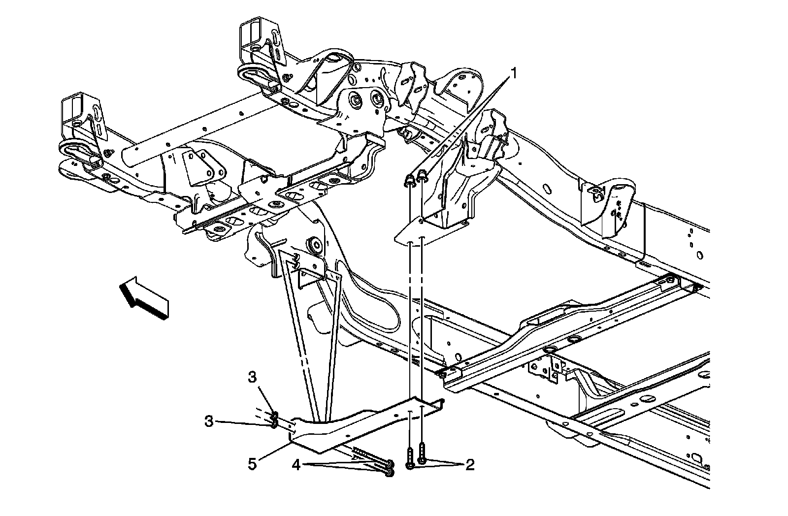
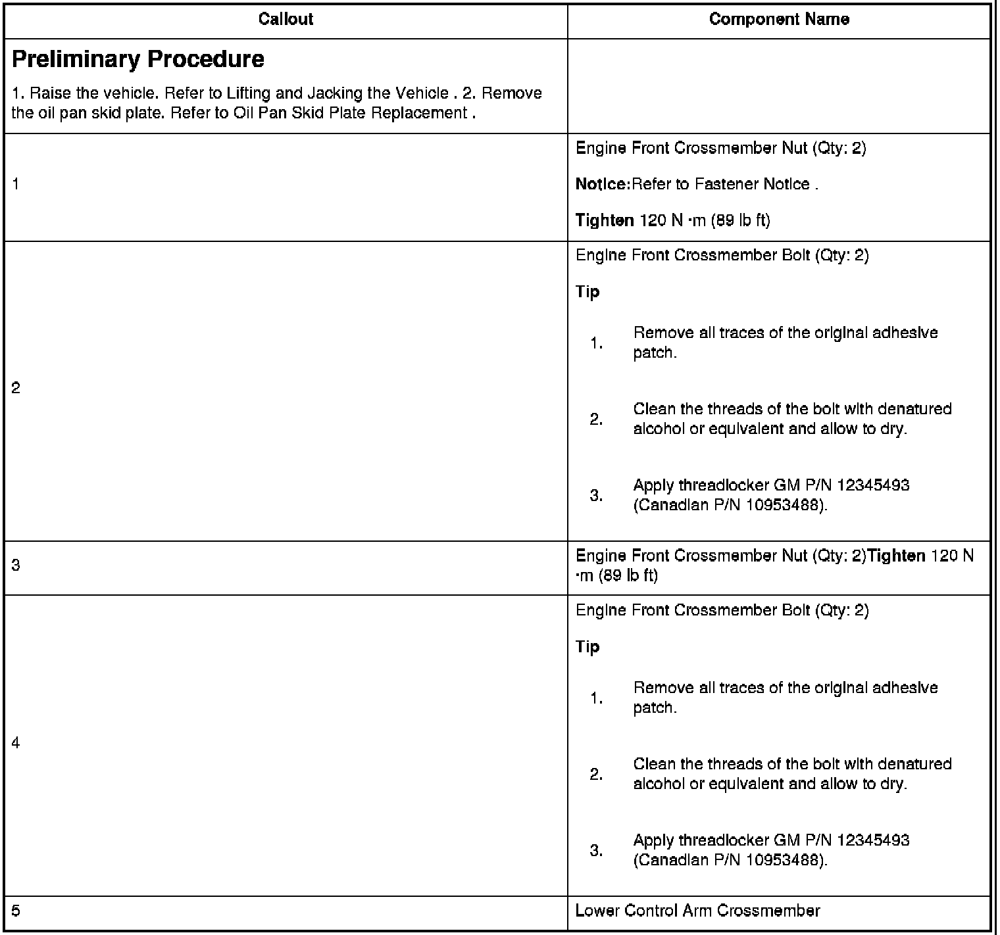

Drivetrain and Front Suspension Frame Front Crossmember Replacement (2WD 2500 HD, 3500)
Drivetrain and Front Suspension Frame Front Crossmember Replacement (2WD 2500 HD, 3500)


Preliminary Procedure
Notice:Refer to.
Tighten
Tip1.Remove all traces of the original adhesive patch.2.Clean the threads of the bolt with denatured alcohol or equivalent and allow to dry.3.Apply threadlocker GM P/N 12345493 (Canadian P/N 10953488).
Tighten
Tip1.Remove all traces of the original adhesive patch.2.Clean the threads of the bolt with denatured alcohol or equivalent and allow to dry.3.Apply threadlocker GM P/N 12345493 (Canadian P/N 10953488).